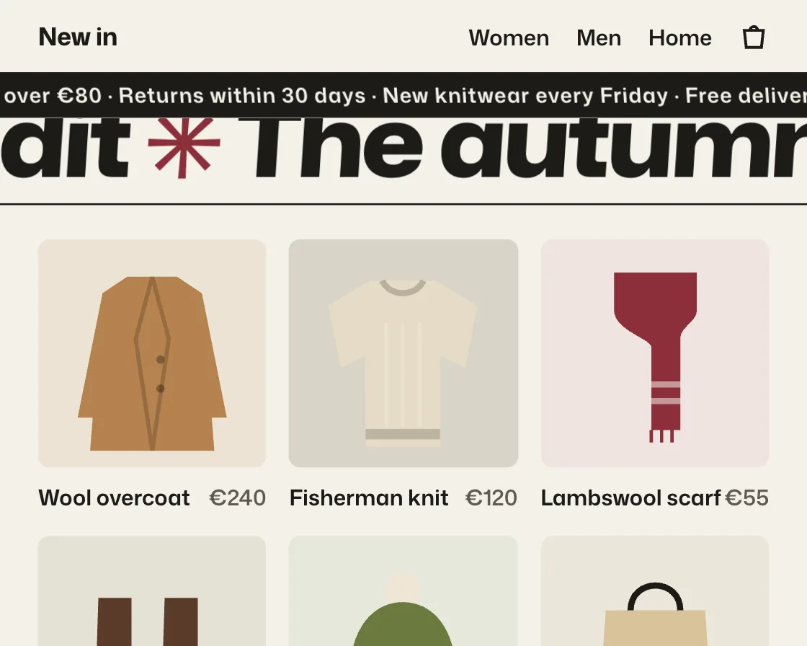

Velocity-skew marquee
Velocity-skew marquee is a DOM effect: scroll velocity speeds up the marquee and skews it. One plain JavaScript file with no dependencies; add it with npx motion-library add velocity-skew.

Open it live, tune it and copy the code
What is Velocity-skew marquee?
Promo bands drift constantly, and a quick scroll flick makes them race and tilt before settling.
How does Velocity-skew marquee work?
Scroll velocity is smoothed, then added to the drift speed and turned into a skew, so the lean builds and settles instead of twitching.
How do I add Velocity-skew marquee to my website?
- In your project folder, run
npx motion-library add velocity-skew. It writesanimations/velocity-skew.js. Needs Node 18 or newer. - Import it and call it with a container element that has a size:
import fx from './animations/velocity-skew.js'; const stop = fx(document.querySelector('#hero')); - Call
stop()to clean up, for example when a component unmounts.
Every setting below is also a flag, so you can install it already tuned: npx motion-library add velocity-skew --skew 0.6.
What settings can I tweak?
| Setting | Flag | Default | Range | Step |
|---|---|---|---|---|
| Skew | --skew | 0.25 | 0 to 0.6 | 0.01 |
| Boost | --boost | 6 | 0 to 15 | 0.5 |
Specifications
- Renderer
- DOM (CSS and the Web Animations API)
- Category
- Scroll
- Dependencies
- None
- File size
- 9.0 KB, unminified
- Interactive
- Yes: it follows scrolling
- Reduced motion
- Respects prefers-reduced-motion
- Licence
- MIT-0: use it anywhere, no credit needed
Source code
// Velocity-skew marquee, on a clothing shop's autumn page: the promo strip and the big "autumn edit" band always drift, and the speed of your scroll is added on top and leans the type, so a fast flick makes them race and tilt.
// The velocity is smoothed before it is used, so the lean builds and settles instead of twitching, and both the boost and the skew decay back to the idle drift when the page stops. The page scrolls itself here, with slow reads and quick flicks; a real wheel or swipe takes over.
const PARAMS = { skew: 0.25, boost: 6 };
export default function (stage) {
const reduce = matchMedia('(prefers-reduced-motion: reduce)').matches;
const AH = 340, MINW = 400;
const art = {
coat: c => `<path d="M38 18h24l12 8 6 76H20l6-76z" fill="${c}"/><path d="M50 18l-8 30 8 54M50 18l8 30-8 54" fill="none" stroke="#000" stroke-opacity=".18" stroke-width="2"/><path d="M26 26l-12 60h10l8-46M74 26l12 60H76l-8-46" fill="${c}"/><circle cx="54" cy="58" r="2" fill="#000" opacity=".3"/><circle cx="54" cy="72" r="2" fill="#000" opacity=".3"/>`,
knit: c => `<path d="M34 20h32l20 12-6 30-12-6v44H32V56l-12 6-6-30z" fill="${c}"/><path d="M40 20c4 8 16 8 20 0" fill="none" stroke="#000" stroke-opacity=".2" stroke-width="3"/><path d="M32 94h36" stroke="#000" stroke-opacity=".18" stroke-width="5"/><path d="M42 40v50M50 40v50M58 40v50" stroke="#fff" stroke-opacity=".14" stroke-width="2"/>`,
scarf: c => `<path d="M30 16h40v18c0 6-8 8-8 14v44H48V52c0-4-18-8-18-18z" fill="${c}"/><path d="M48 70h14M48 78h14" stroke="#fff" stroke-opacity=".5" stroke-width="3"/><path d="M48 92v6M53 92v6M58 92v6" stroke="${c}" stroke-width="1.6"/>`,
boots: c => `<path d="M24 30h16v44l18 8v12H22z" fill="${c}"/><path d="M56 30h16v44l18 8v12H54z" fill="${c}"/><path d="M22 90h36M54 90h36" stroke="#1d1b18" stroke-width="5"/>`,
beanie: c => `<circle cx="50" cy="26" r="9" fill="#efe6d6"/><path d="M24 70c0-26 12-38 26-38s26 12 26 38z" fill="${c}"/><rect x="22" y="66" width="56" height="16" rx="4" fill="${c}"/><path d="M28 70v10M36 70v10M44 70v10M52 70v10M60 70v10M68 70v10" stroke="#000" stroke-opacity=".18" stroke-width="2"/>`,
tote: c => `<path d="M38 36c0-16 24-16 24 0" fill="none" stroke="#1d1b18" stroke-width="3"/><path d="M26 36h48l4 58H22z" fill="${c}"/><path d="M40 60h20" stroke="#1d1b18" stroke-opacity=".5" stroke-width="2"/>`,
};
const items = [['Wool overcoat', '€240', 'coat', '#b6824f', '#ece3d3'], ['Fisherman knit', '€120', 'knit', '#e6dcc6', '#d9d4c7'], ['Lambswool scarf', '€55', 'scarf', '#8c2f39', '#efe4e1'], ['Chelsea boots', '€180', 'boots', '#5a3b2a', '#e5e1d6'], ['Ribbed beanie', '€35', 'beanie', '#6b7a3e', '#e7e9dc'], ['Canvas tote', '€45', 'tote', '#d8c39a', '#ece6db']];
const root = document.createElement('div');
root.className = 'vs-root';
root.innerHTML = `<style>
.vs-root { position: absolute; inset: 0; overflow: hidden; background: #f4f1ea; color: #1d1b18; font-family: "Mona Sans", system-ui, -apple-system, sans-serif; }
.vs-art { position: absolute; left: 0; top: 0; height: ${AH}px; transform-origin: 0 0; }
.vs-scroll { position: absolute; inset: 0; overflow-y: auto; overflow-x: hidden; scrollbar-width: none; }
.vs-scroll::-webkit-scrollbar { display: none; }
.vs-top { position: sticky; top: 0; z-index: 2; background: #f4f1ea; }
.vs-head { height: 38px; display: flex; align-items: center; gap: 14px; padding: 0 20px; font-size: 11.5px; font-weight: 580; }
.vs-head strong { margin-right: auto; font-size: 13px; font-weight: 720; letter-spacing: -0.01em; }
.vs-head svg { width: 16px; height: 16px; }
.vs-promo { height: 24px; overflow: hidden; background: #1d1b18; color: #f4f1ea; display: flex; align-items: center; }
.vs-row { white-space: nowrap; will-change: transform; }
.vs-promo .vs-row { font-size: 11px; font-weight: 620; letter-spacing: .04em; }
.vs-hero { display: grid; grid-template-columns: 1fr 44%; gap: 16px; align-items: center; padding: 20px 20px 18px; }
.vs-hero small { font-size: 10.5px; font-weight: 700; letter-spacing: .12em; color: #8c2f39; }
.vs-hero h1 { margin: 6px 0 8px; font: 600 36px/1 ui-serif, "Iowan Old Style", Georgia, serif; letter-spacing: -0.02em; }
.vs-hero p { margin: 0 0 12px; font-size: 12px; color: #5f5a52; }
.vs-hero u { font-size: 12px; font-weight: 650; text-underline-offset: 3px; }
.vs-hero svg { width: 100%; height: 190px; border-radius: 6px; background: #e3d6c2; }
.vs-band { overflow: hidden; padding: 8px 0; border-block: 1px solid #1d1b18; }
.vs-band .vs-row { font-size: 52px; font-weight: 820; font-stretch: 112%; letter-spacing: -0.03em; line-height: 1; }
.vs-band .vs-row span { color: #8c2f39; }
.vs-grid { display: grid; grid-template-columns: repeat(3, 1fr); gap: 12px; padding: 18px 20px 40px; }
.vs-tile svg { display: block; width: 100%; height: 120px; border-radius: 6px; }
.vs-tile b { display: flex; justify-content: space-between; margin-top: 7px; font-size: 11.5px; font-weight: 620; }
.vs-tile b span { font-weight: 560; color: #5f5a52; }
</style>
<div class="vs-art"><div class="vs-scroll">
<div class="vs-top">
<div class="vs-head"><strong>New in</strong><span>Women</span><span>Men</span><span>Home</span><svg viewBox="0 0 16 16" aria-hidden="true"><path d="M3 5h10l-1 9H4z" fill="none" stroke="#1d1b18" stroke-width="1.5"/><path d="M6 5a2 2 0 0 1 4 0" fill="none" stroke="#1d1b18" stroke-width="1.5"/></svg></div>
<div class="vs-promo"><div class="vs-row"></div></div>
</div>
<div class="vs-hero">
<div><small>NEW THIS WEEK</small><h1>Warm layers for cold mornings.</h1><p>Wool, waxed cotton and good boots, made to be worn for years.</p><u>Shop the edit</u></div>
<svg viewBox="0 0 100 110" preserveAspectRatio="xMidYMid meet" aria-hidden="true">${art.coat('#8a5a34')}</svg>
</div>
<div class="vs-band"><div class="vs-row"></div></div>
<div class="vs-grid">${items.map(([n, p, a, c, bg]) => `<div class="vs-tile"><svg viewBox="0 0 100 110" style="background:${bg}" aria-hidden="true">${art[a](c)}</svg><b>${n}<span>${p}</span></b></div>`).join('')}</div>
<div class="vs-band"><div class="vs-row"></div></div>
<div style="height:120px"></div>
</div></div>`;
stage.append(root);
const box = root.querySelector('.vs-art'), sc = root.querySelector('.vs-scroll');
const texts = ['Free delivery over €80 · Returns within 30 days · New knitwear every Friday · ', 'The autumn edit <span>✳</span> ', 'Wool <span>✳</span> Waxed cotton <span>✳</span> Leather <span>✳</span> '];
const rows = [...root.querySelectorAll('.vs-row')].map((el, i) => { el.innerHTML = texts[i].repeat(8); return { el, x: 0, dir: i === 1 ? 1 : -1, w: 0 }; });
const fit = () => {
const W = stage.clientWidth, H = stage.clientHeight, s = Math.min(H / AH, W / MINW) || 1;
box.style.width = W / s + 'px'; box.style.top = (H - AH * s) / 2 + 'px'; box.style.transform = `scale(${s})`;
rows.forEach(r => { r.w = r.el.scrollWidth / 8; });
};
const ro = new ResizeObserver(fit); ro.observe(stage); fit();
// Simulated shopper: slow reads and quick flicks, so you see the strips idle, race and settle.
const stops = [[0, 0, 1000], [0.5, 650, 1000], [0.62, 1500, 500], [1, 600, 1100], [0.25, 700, 900], [0, 1300, 500]];
const ease = t => t < 0.5 ? 4 * t * t * t : 1 - Math.pow(-2 * t + 2, 3) / 2;
let seg = null, si = 0, userUntil = 0, raf;
const take = () => { userUntil = performance.now() + 3000; seg = null; };
['wheel', 'touchstart', 'pointerdown'].forEach(e => sc.addEventListener(e, take, { passive: true }));
function drive(now) {
if (now < userUntil) return;
if (!seg) { const [at, dur, hold] = stops[si++ % stops.length]; seg = { from: sc.scrollTop, to: at * (sc.scrollHeight - sc.clientHeight), t0: now, dur, hold }; }
const k = seg.dur ? Math.min(1, (now - seg.t0) / seg.dur) : 1;
sc.scrollTop = seg.from + (seg.to - seg.from) * ease(k);
if (now - seg.t0 >= seg.dur + seg.hold) seg = null;
}
let lastTop = sc.scrollTop, vel = 0, last = performance.now();
function frame(now) {
drive(now);
const dt = Math.max(1, now - last); last = now;
const raw = (sc.scrollTop - lastTop) / dt; lastTop = sc.scrollTop; // px per ms
vel += (raw - vel) * 0.12; // smooth it
// reduced motion: the strips keep their slow idle drift, but scrolling no longer speeds them up or leans the type
const speed = 0.03 + (reduce ? 0 : Math.abs(vel) * PARAMS.boost * 0.05);
const skew = reduce ? 0 : Math.max(-16, Math.min(16, vel * PARAMS.skew * 30));
rows.forEach(r => {
if (!r.w) return;
// scrolling down pushes each strip further along its own direction
r.x = (r.x + r.dir * speed * dt * (r.el.parentElement.classList.contains('vs-promo') ? 0.6 : 1)) % r.w;
r.el.style.transform = `translateX(${(r.x - (r.dir > 0 ? r.w : 0)).toFixed(2)}px) skewX(${(-skew * r.dir).toFixed(2)}deg)`;
});
raf = requestAnimationFrame(frame);
}
raf = requestAnimationFrame(frame);
return () => { cancelAnimationFrame(raf); ro.disconnect(); root.remove(); };
}